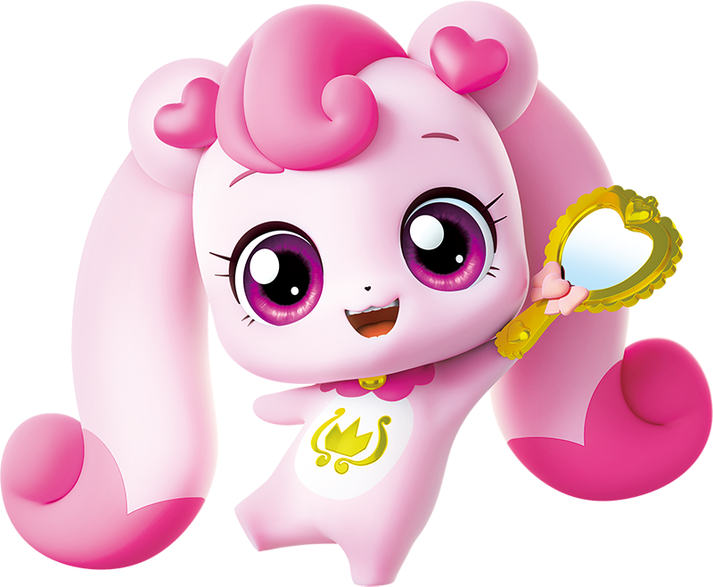

✨ 우리 아이 한글 쑥쑥 프로젝트 ✨
💖 캐치! 티니핑 한글 놀이 💖
좋아하는 시즌을 고르고 티니핑 친구들의 이름을 맞춰보세요!
🎯 문제 수:
10문제
20문제
전체 다 풀기
🔊 한글 읽어주기:
하츄핑 목소리 켜짐 🔊
시즌 1

1기 캐치! 티니핑
큐브 티니핑 · 45마리
시즌 2
2기 반짝반짝 티니핑
보석 티니핑 · 20마리
시즌 3
3기 알쏭달쏭 티니핑
열쇠 티니핑 · 21마리
시즌 4
4기 새콤달콤 티니핑
디저트 티니핑 · 22마리
시즌 5
5기 슈팅스타 티니핑
스타 티니핑 · 24마리
시즌 6
6기 프린세스 티니핑
프린세스 & 극장판 · 22마리
👑 시즌 1 ~ 6 전체 통합
🌟 종합 한글 퀴즈 (1~6시즌 모두!)
총 154마리 모든 시즌 티니핑이 한꺼번에 나와요!
🏠 시즌 다시 고르기
1기 캐치! 티니핑
1 / 10
💖 0
1기 캐치! 티니핑
로열 티니핑
이 티니핑의 이름은 무엇일까요?
🔊 이름 소리 먼저 들어보기
💡 마법 힌트 보기
다음 친구 만나기 👉
👑🎉💖
참 잘했어요! 한글 박사님!
👇 오늘 맞힌 티니핑 이름을 눌러서 다시 읽어보세요!
🔄 한 번 더 하기!
🏠 다른 시즌 고르기